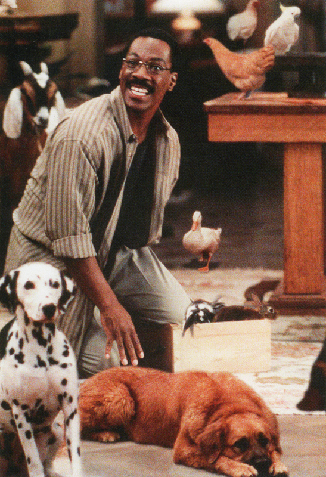

Dr. John Dolittle
The man who saved a thousand animals

Dr. John Doolittle, second from left, surrounded by his patient from all over the world.
Here's a time line of Dr. Dolittle's life:
- 1961 - Born in England, Puddleby-on-the-Marsh.
- 1976 - Learned the secret of speaking to all animals from his parrot Polynesia.
- 1980 - Started Veterinary Nursing CPD Courses.
- 1987 - Finished his degree and become professional certified veterinary.
- 1988 - Marries wife Nicole Mitchell.
- 1989 - Was born his first son Eric.
- 1990 - Was born his second son Christian.
- 1997 - Divorced with his wife.
- 2000 - Opened his vet clinic.
- 2005 - Travelled across the world with Free-Helping Mission.
- 2020 - Helped firefiters with locating animals in fire woods in Australia.
- 2021 - Received the Globe Prize.
"Dolittle is a physician who shuns human patients in favour of animals, with whom he can speak in their own languages. He later becomes a naturalist, using his abilities to speak with animals to better understand nature and the history of the world."
-- Australian Prime Minister Scott Morrison